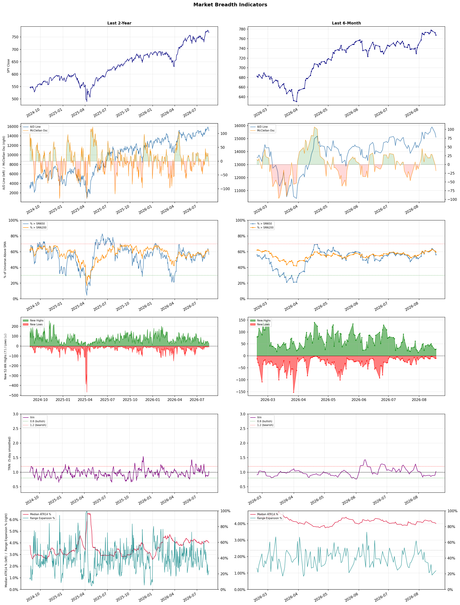

A daily market breadth and sector rotation report for active investors
| Item | Read |
|---|---|
| Regime downgraded | Risk-On → Selective Risk-On |
| Regime | Selective Risk-On |
| Risk posture | Selective |
| Universe | 1,332 stocks tracked · 28 new 52-week highs · 30 active swing setups |
| Breadth | 56.3% of tracked stocks are above SMA50 — neutral range, new highs exceed new lows (28 vs 10), McClellan oscillator (breadth momentum) is negative at -18.2 |
| Leadership | Diagnostics & Research, Health Information Services, and Oil & Gas Refining & Marketing |
| Weakest groups | Solar, Chemicals, and Utilities - Independent Power Producers |
Use this report to prioritize research and chart review; validate entries, stops, liquidity, earnings, and risk before acting.
| Item | Read |
|---|---|
| Primary read | Selective Risk-On regime with Selective risk posture. |
| Research queue | TWST, WGS, NTRA, IQV, TMO |
| Leadership focus | Diagnostics & Research, Health Information Services, and Oil & Gas Refining & Marketing |
| Caution list | Solar, Chemicals, and Utilities - Independent Power Producers |
| Review prompt | Check extension risk, chart location, fundamentals, valuation, and earnings before using any research row. |
| Item | Read |
|---|---|
| Primary read | 2 active risk warnings; use screen output as watchlist input only. |
| Bullish screens | MPC, PSX, VLO, ACAD, HALO |
| Bearish screens | GME, TDUP, TDOC, STLA, ENVX |
| Alerts / levels | Automated trigger, stop, ATR, liquidity, reward/risk, and event-risk levels are pending future enrichment. |
| Review prompt | Open the linked chart, define trigger and invalidation, then check liquidity and event risk independently. |
Risk Posture: Selective — screen backdrop supports selective research in leading industries
Metric context: McClellan below -50 = elevated selling pressure; below -100 = washout territory. Range Expansion = share of stocks with daily range above their 20-day average. Signal Density = share of tracked names appearing in signal screens.
| Breadth Date | % > SMA50 | % > SMA200 | New Highs | New Lows | McClellan | Median Range | Avg Range | Median ATR14 | Range Expansion | Signal Density |
|---|---|---|---|---|---|---|---|---|---|---|
| 2026-08-18 | 56.3% | 59.8% | 28 | 10 | -18.2 | 2.9% | 3.5% | 4.0% | 23.9% | 11.6% |

Regime downgraded: Risk-On → Selective Risk-On
Prior comparison date: August 17, 2026
| Metric | Prior | Current | Change |
|---|---|---|---|
| Regime | Risk-On | Selective Risk-On | changed |
| Risk Posture | Aggressive | Selective | changed |
| % > SMA50 | 60.6% | 56.3% | -4.3 pts |
| % > SMA200 | 62.1% | 59.8% | -2.3 pts |
| New Highs | 38 | 28 | -10 |
| New Lows | 13 | 10 | +3 |
Top-10 industries entering: Software - Infrastructure. Top-10 industries leaving: Banks - Diversified. New multi-signal long setups: ACAD, BMY, GILD, HALO, KURA, MPC, PSX. New multi-signal short setups: ARRY, ENVX, GME.
| Status | Tickers | Read |
|---|---|---|
| Added | ACAD, ARRY, AVR, BMY, ENVX, GILD, GME, HALO | New technical screen matches vs prior report. |
| Removed | ABSI, ABUS, AKAM, BTE, CGAU, COHU, DAR, ENTG | No longer present in today's technical screen matches. |
| Still Active | APPS, BXSL, CRSR, CVE, EQNR, FSLY, GRND, NVCR | Appeared in both current and prior reports. |
| Promoted | none | Model Screen Score improved by at least 15 points. |
| Downgraded | CRSR | Model Screen Score declined by at least 15 points. |
| Direction | Industry | ETF | Prior Rank | Current Rank | Days | Rank Change |
|---|---|---|---|---|---|---|
| Rose | Gold | GDX | 87 | 16 | 35 | +71 |
| Rose | Copper | COPX | 87 | 18 | 42 | +69 |
| Rose | Oil & Gas E&P | XOP | 82 | 14 | 42 | +68 |
| Rose | Oil & Gas Integrated | XLE | 77 | 12 | 42 | +65 |
| Rose | Aerospace & Defense | ITA | 86 | 31 | 35 | +55 |
Bull: Gold is rising in relative strength primarily due to a significant increase in its price, recently hitting $4,400, which indicates strong demand and investor confidence in the asset as a safe haven amid economic uncertainty. Additionally, the bullish sentiment towards gold stocks, as highlighted by Newmont's impressive 66% gains and the positive outlook from Zacks Investment Research on gold stocks, suggests that investors are increasingly favoring gold mining equities, further bolstering the sector's performance compared to others. This trend is underscored by a broader market rotation into gold, as evidenced by Barrick's stock valuation reset and the growing interest in leveraged gold ETFs, indicating a strategic shift among investors seeking stability and upside potential in their portfolios.
Bear: While the recent rise in gold prices to $4,400 may suggest strong demand, it is crucial to consider that this spike could be driven by speculative trading rather than sustained investor confidence, particularly as inflationary pressures and geopolitical tensions fluctuate. Additionally, the significant gains in gold mining stocks like Newmont may not be sustainable, as they often lag behind gold prices during corrections, and the rotation into gold might be a short-term trend rather than a long-term shift, especially with rising interest rates potentially diminishing gold's appeal as a non-yielding asset. Furthermore, the mention of LINGBAO GOLD leading losses highlights the volatility and risks within the sector, suggesting that not all gold stocks will benefit equally from this perceived bullish environment.
Verdict: The gold industry's recent rise, with prices reaching $4,400, is primarily driven by heightened demand for gold as a safe haven amid economic uncertainty and inflationary pressures, alongside strong performance from gold mining stocks. However, investors should remain cautious of the potential for speculative trading driving this surge, as rising interest rates could diminish gold's attractiveness and lead to corrections in both gold prices and mining equities. It is advisable to monitor macroeconomic indicators closely and consider diversifying investments to mitigate risks associated with volatility in the gold sector.
Sources: Yahoo Finance, Google News
Bull: Copper is rising in relative strength primarily due to its critical role in the electrification and AI boom, as highlighted by headlines discussing COPX as a key player in the "electrification squeeze" and the "pick-and-shovel AI trade." The growing demand for copper, driven by increased investment in renewable energy, electric vehicles, and advanced technologies, positions it as a vital commodity, especially as the market shifts focus from traditional sectors like software to essential materials like copper. Additionally, the significant performance of copper ETFs, as noted in the headlines, underscores a broader recognition among investors of copper's value in the current economic landscape.
Bear: While the bullish narrative around copper's role in electrification and AI is compelling, it overlooks several critical headwinds that could undermine its price trajectory. Firstly, the copper market is highly cyclical and sensitive to global economic conditions; a slowdown in major economies, particularly China, could significantly dampen demand. Additionally, the recent surge in copper prices may be more reflective of speculative trading and investor sentiment rather than sustainable fundamentals, raising concerns about a potential correction as market realities set in.
Verdict: The rising trend in the copper industry is fundamentally driven by its essential role in the electrification and AI boom, with increasing demand from renewable energy and electric vehicle sectors propelling prices higher. However, investors should remain cautious of potential headwinds, particularly a slowdown in major economies like China, which could dampen demand and lead to a market correction if speculative trading outpaces sustainable fundamentals.
Sources: Yahoo Finance, Google News
Bull: The Oil & Gas E&P sector, represented by the XOP ETF, is experiencing rising relative strength primarily due to a significant increase in oil prices, recently topping $100 for the first time since May, which enhances profitability for exploration and production companies. Additionally, the bullish sentiment is reinforced by strong performances from key players like Antero Resources and Talos Energy, as highlighted in recent headlines, indicating robust demand and operational efficiency in a tightening oil market. This combination of high prices and strong company fundamentals positions the sector favorably against other industries.
Bear: While rising oil prices may enhance profitability in the short term, the XOP ETF's recent gains could be unsustainable due to potential geopolitical risks, such as the reopening of key shipping routes that could flood the market with supply, thereby driving prices down. Furthermore, the concentration of holdings in the ETF suggests a lack of diversification, making it vulnerable to sector-specific downturns, especially if macroeconomic factors, such as a global recession or shifts towards renewable energy, begin to weigh on demand for fossil fuels.
Verdict: The Oil & Gas E&P sector's recent rise is primarily driven by surging oil prices, which have exceeded $100, boosting profitability for exploration and production companies and reflecting strong demand in a tightening market. However, investors should remain cautious of geopolitical risks, such as the potential reopening of key shipping routes that could increase supply and pressure prices downward, as well as broader macroeconomic factors that may impact fossil fuel demand.
Sources: Yahoo Finance, Google News
Bull: The Oil & Gas Integrated sector is experiencing rising relative strength primarily due to increasing oil prices, as indicated by headlines such as "Energy Is Headed for a Record High, and the Rally Isn't Over Yet" and "Increasing Fair Value Estimates for Major Oil Stocks on Higher Oil Prices." Additionally, the significant decline in the U.S. Strategic Petroleum Reserve (SPR), highlighted in the headline "U.S. SPR Falls Fast: What Does it Mean for Oil & Energy ETFs?", suggests tighter supply conditions, further supporting bullish sentiment in the sector. This combination of rising prices and supply constraints positions the Oil & Gas Integrated sector favorably compared to others.
Bear: While rising oil prices and declining U.S. SPR levels may suggest a bullish outlook for the Oil & Gas Integrated sector, these factors can also signal underlying vulnerabilities. The depletion of the SPR could indicate a lack of strategic reserves to cushion against geopolitical shocks or supply disruptions, raising concerns about long-term energy security. Additionally, the sector's reliance on high oil prices for profitability may be unsustainable, especially if economic headwinds or shifts toward renewable energy accelerate, potentially leading to a sharp correction in stock valuations.
Verdict: The Oil & Gas Integrated sector's rising relative strength is fundamentally driven by increasing oil prices and tightening supply conditions, as evidenced by the significant decline in the U.S. Strategic Petroleum Reserve. However, the key risk lies in the potential for economic headwinds or a rapid transition to renewable energy, which could undermine the sector's reliance on high oil prices and lead to a sharp correction in valuations. Investors should monitor geopolitical developments and shifts in energy policy closely to gauge the sustainability of this bullish trend.
Sources: Yahoo Finance, Google News
Bull: The Aerospace & Defense sector is experiencing a rising relative strength primarily due to increased defense spending driven by geopolitical tensions and a robust demand for advanced military capabilities, as highlighted by headlines discussing strong earnings from major players like Lockheed Martin and RTX, which reported record backlogs. Additionally, the overall bullish sentiment is reinforced by the notion that defense spending plays extend beyond traditional defense ETFs, indicating a broader market recognition of the sector's growth potential amidst ongoing global uncertainties.
Bear: While the Aerospace & Defense sector may currently show rising relative strength and strong earnings from major players, this could be a temporary reaction to heightened geopolitical tensions rather than a sustainable growth trajectory. The significant volatility in smaller defense-related stocks, such as Red Cat's recent 26% drop, suggests that investor sentiment may be overly optimistic and that the market could be underestimating potential headwinds, including budget constraints, shifting political priorities, and the risk of overreliance on government contracts in an uncertain economic environment. Additionally, the question of whether investors are paying for genuine skill or simply riding the market wave raises concerns about the long-term viability of current valuations in the sector.
Verdict: The Aerospace & Defense sector's rising strength is fundamentally driven by increased defense spending fueled by geopolitical tensions and a robust demand for advanced military capabilities, as evidenced by strong earnings and record backlogs from major companies like Lockheed Martin and RTX. However, investors should remain cautious of potential risks, including budget constraints and shifting political priorities, which could undermine the sustainability of this growth and lead to volatility in valuations. It is advisable to closely monitor government policies and economic indicators that may impact defense budgets and contract reliance.
Sources: Yahoo Finance, Google News
| Direction | Industry | ETF | Prior Rank | Current Rank | Days | Rank Change |
|---|---|---|---|---|---|---|
| Fell | REIT - Healthcare Facilities | XLRE | 5 | 71 | 28 | -66 |
| Fell | REIT - Retail | N/A | 12 | 75 | 28 | -63 |
| Fell | Gambling | N/A | 17 | 79 | 42 | -62 |
| Fell | Airlines | N/A | 3 | 65 | 42 | -62 |
| Fell | Healthcare Plans | IHF | 1 | 57 | 42 | -56 |
Bear: While the bull analyst highlights potential long-term strength in healthcare REITs, the current relative weakness in the sector raises significant concerns about underlying fundamentals, particularly as financial stocks face volatility. The "no hike" scenario may indeed favor more stable sectors, but healthcare REITs are grappling with rising interest rates and inflationary pressures that could erode profit margins and increase operational costs. Furthermore, the ongoing uncertainty in the broader economy may lead to reduced demand for healthcare services and facilities, undermining the optimistic projections put forth by analysts.
Bull: The relative weakness of the Healthcare Facilities REIT sector can be attributed to broader market concerns regarding financial stocks, as indicated by multiple headlines highlighting mixed and declining performances in this sector. Additionally, the focus on the "no hike" scenario winners suggests that investors may be favoring sectors perceived as more stable or growth-oriented, potentially diverting capital away from healthcare REITs. However, the recognition of top healthcare REITs by outlets like The Motley Fool and U.S. News Money indicates a strong long-term outlook for this sector, suggesting that current relative weakness may present a buying opportunity.
Verdict: The relative weakness of the Healthcare Facilities REIT sector can be attributed to broader market concerns regarding financial stocks, as indicated by multiple headlines highlighting mixed and declining performances in this sector. Additionally, the focus on the "no hike" scenario winners suggests that investors may be favoring sectors perceived as more stable or growth-oriented, potentially diverting capital away from healthcare REITs. However, the recognition of top healthcare REITs by outlets like The Motley Fool and U.S. News Money indicates a strong long-term outlook for this sector, suggesting that current relative weakness may present a buying opportunity.
Sources: Yahoo Finance, Google News
Bear: While the bull analyst attributes the relative weakness of Retail REITs to broader retail industry challenges and a shift towards other REIT sectors, it overlooks the fundamental issue of rising interest rates and inflation, which significantly impact the cost of capital and operational expenses for retail properties. Additionally, the persistent shift towards e-commerce is not just a temporary trend but a structural change that threatens the viability of many brick-and-mortar retailers, leading to higher vacancy rates and declining rental income for Retail REITs. This suggests that the challenges facing Retail REITs are not merely cyclical but indicative of a deeper, ongoing transformation in the retail landscape.
Bull: The relative weakness of the Retail REIT sector can be attributed to the broader challenges facing the retail industry, including shifts in consumer behavior and the ongoing impact of e-commerce, which are highlighted in the headlines discussing the shrinking Canadian REIT sector and the competitive landscape for retail properties. Additionally, the focus on growth and investment opportunities in other types of REITs, as noted in articles from Morningstar and The Motley Fool, suggests that investors are currently favoring sectors with more robust growth prospects, contributing to the Retail REITs' declining relative strength.
Verdict: The Retail REIT sector's decline is primarily driven by the structural shift towards e-commerce, which is exacerbated by rising interest rates and inflation that increase operational costs and strain profitability. Investors should be cautious, as the ongoing transformation in consumer behavior and the retail landscape may lead to persistently high vacancy rates and declining rental income, posing significant risks to Retail REITs' stability and growth prospects. Therefore, reallocating investments towards sectors with stronger growth potential may be prudent in the current environment.
Sources: Google News
Bear: While the bull analyst highlights potential opportunities in specific stocks, the overall gambling industry is grappling with significant headwinds that cannot be overlooked. The increasing regulatory scrutiny and tax pressures, particularly in key markets like the UK, are likely to stifle growth and profitability across the sector, raising concerns about long-term sustainability. Furthermore, the consolidation trend may lead to increased competition and market volatility, as the uncertainty surrounding potential buyouts could deter investment and hinder innovation, ultimately overshadowing any short-term gains from select companies.
Bull: The Gambling industry is experiencing a decline in relative strength primarily due to increased regulatory scrutiny and tax pressures, as highlighted by The Guardian's mention of tax rises impacting British gambling firms. Additionally, the broader market sentiment may be influenced by the consolidation trend within the sector, as indicated by 24/7 Wall St.'s discussion of potential buyouts, which can create uncertainty among investors about the future competitive landscape. Despite these challenges, the positive outlook for specific stocks, such as the Japanese gaming company noted by Investing.com, suggests that there are still strong opportunities within the sector.
Verdict: The gambling industry's decline is primarily driven by heightened regulatory scrutiny and tax pressures, particularly in the UK, which are constraining growth and profitability across the sector. The key risk highlighted by the bear thesis is that ongoing consolidation may exacerbate market volatility and competition, deterring investment and stifling innovation, ultimately overshadowing any potential short-term gains from select companies. Investors should remain cautious and closely monitor regulatory developments and market dynamics before making significant commitments in this space.
Sources: Google News
Bear: While the bull analyst attributes the decline in airline stocks to temporary factors such as profit warnings and rising operational costs, the broader trend of falling relative strength suggests deeper, systemic issues within the industry. Increased competition, ongoing labor disputes, and the potential for a recession could further erode profitability, making it difficult for airlines to maintain pricing power and manage costs effectively. Additionally, the reliance on consumer travel demand, which remains uncertain in the face of economic pressures, raises significant concerns about the sustainability of any projected long-term growth.
Bull: The recent decline in the relative strength of airline stocks can be attributed to sector-wide profit warnings, as highlighted in Barron's, which have raised concerns about profitability amid rising operational costs and potential demand fluctuations. Additionally, the downward pressure on American Airlines stock and comparisons to competitors like Delta and United, as noted by 24/7 Wall St., suggest that investor sentiment is shifting, leading to a cautious outlook on the sector despite the long-term growth potential highlighted by analysts in various reports.
Verdict: The recent decline in airline stocks is primarily driven by sector-wide profit warnings and rising operational costs, which have heightened concerns about profitability amid fluctuating demand. The key risk highlighted by the bear case is the potential for increased competition and economic pressures, such as a recession, which could further undermine airlines' pricing power and lead to sustained profitability challenges. Investors should approach the sector with caution, closely monitoring economic indicators and competitive dynamics before making investment decisions.
Sources: Google News
Bear: While the bull analyst attributes the relative weakness in the Healthcare Plans sector to profit-taking and short-term volatility, a more concerning factor is the looming threat of regulatory changes and increased competition that could undermine profit margins for major players like UnitedHealth and Humana. The headlines suggest a market that is overly optimistic about Medicare updates, yet the sustainability of these gains is questionable as rising costs and potential policy shifts may create significant headwinds, leading to a more bearish outlook for the sector in the long run.
Bull: The relative weakness in the Healthcare Plans sector, as indicated by the falling trend against other industries, can be attributed to recent profit-taking after significant gains, particularly seen in UnitedHealth's pullback from its 52-week high. Additionally, the focus on Medicare updates and the subsequent surge in health insurance stocks may have led to short-term volatility, as investors reassess the sustainability of recent price increases amid evolving regulatory landscapes and competitive pressures highlighted in the headlines.
Verdict: The recent decline in the Healthcare Plans sector is primarily driven by profit-taking following substantial gains, particularly in stocks like UnitedHealth, amidst heightened volatility related to Medicare updates. However, the key risk lies in the potential for regulatory changes and increased competition that could pressure profit margins, suggesting investors should proceed with caution and closely monitor policy developments that may impact long-term profitability in the sector.
Sources: Yahoo Finance, Google News
| Industry | Rank | ETF | 7d | 14d | 28d | 42d | Chg 42d | Size | 20D | 60D | Composite | Active Setups |
|---|---|---|---|---|---|---|---|---|---|---|---|---|
| Diagnostics & Research | 1 | N/A | 1 | 4 | 2 | 4 | +3 | 16 | 9.7% | 44.6% | 0.929 | 1 |
| Health Information Services | 2 | N/A | 4 | 39 | 4 | 7 | +5 | 12 | 12.1% | 43.2% | 0.924 | 0 |
| Oil & Gas Refining & Marketing | 3 | CRAK | 6 | 1 | 1 | 28 | +25 | 7 | 5.6% | 34.8% | 0.889 | 0 |
| Software - Application | 4 | IGV | 2 | 9 | 18 | 39 | +35 | 74 | 13.6% | 23.7% | 0.882 | 1 |
| Insurance Brokers | 5 | N/A | 20 | 35 | 16 | 15 | +10 | 6 | 9.9% | 20.5% | 0.880 | 0 |
| Medical Devices | 6 | N/A | 3 | 10 | 36 | 29 | +23 | 20 | 11.0% | 19.5% | 0.861 | 1 |
| Biotechnology | 7 | XBI | 13 | 47 | 15 | 2 | -5 | 91 | 7.1% | 26.3% | 0.824 | 2 |
| Medical Care Facilities | 8 | IHF | 15 | 30 | 6 | 6 | -2 | 9 | 6.0% | 23.6% | 0.821 | 0 |
| Computer Hardware | 9 | XLK | 18 | 8 | 51 | 34 | +25 | 15 | 20.4% | 19.3% | 0.818 | 1 |
| Software - Infrastructure | 10 | IGV | 12 | 17 | 17 | 14 | +4 | 62 | 8.7% | 16.3% | 0.808 | 1 |
Rank columns (7d–42d) show the industry's rank that many trading days ago — lower is stronger. Chg 42d = rank change vs 42 trading days ago — positive means the industry moved up. 20D and 60D are the mean stock return within the industry over that period. Active Setups: count of today's swing-trade candidates from this industry appearing across all signal screens.
| Industry | Rank | ETF | 7d | 14d | 28d | 42d | Chg 42d | Size | 20D | 60D | Composite | Active Setups |
|---|---|---|---|---|---|---|---|---|---|---|---|---|
| Solar | 88 | TAN | 87 | 80 | 80 | 67 | -21 | 8 | -15.1% | -30.5% | 0.044 | 0 |
| Chemicals | 87 | N/A | 88 | 87 | 79 | 84 | -3 | 8 | -10.3% | -25.7% | 0.071 | 1 |
| Utilities - Independent Power Producers | 86 | XLU | 81 | 88 | 81 | 70 | -16 | 5 | -7.8% | -12.5% | 0.095 | 0 |
| Footwear & Accessories | 85 | N/A | 84 | 71 | 42 | 43 | -42 | 5 | -11.2% | -3.2% | 0.106 | 0 |
| REIT - Diversified | 84 | N/A | 80 | 82 | 32 | 61 | -23 | 5 | -7.7% | -5.5% | 0.180 | 0 |
| Electrical Equipment & Parts | 83 | XLI | 86 | 84 | 82 | 48 | -35 | 12 | -9.5% | -29.9% | 0.181 | 0 |
| Utilities - Renewable | 82 | N/A | 73 | 86 | 85 | 83 | +1 | 6 | -6.3% | -23.5% | 0.199 | 0 |
| Auto Manufacturers | 81 | N/A | 68 | 59 | 58 | 75 | -6 | 10 | -6.4% | -8.5% | 0.204 | 0 |
| Agricultural Inputs | 80 | N/A | 79 | 75 | 44 | 68 | -12 | 5 | -4.3% | -6.2% | 0.244 | 1 |
| Gambling | 79 | N/A | 75 | 73 | 31 | 17 | -62 | 5 | -8.9% | -5.2% | 0.248 | 0 |
Rank columns (7d–42d) show the industry's rank that many trading days ago — lower is stronger. Chg 42d = rank change vs 42 trading days ago — positive means the industry moved up. 20D and 60D are the mean stock return within the industry over that period. Active Setups: count of today's swing-trade candidates from this industry appearing across all signal screens.
These are research candidates from top-ranked stocks, capped at five names per industry to avoid over-concentration. Returns shown (60D, 120D, 250D) are historical — they reflect where prices have already moved, not forward expectations. Extension Risk flags names that may require extra patience or a better entry point. They are not buy signals.
Chart: TV = TradingView chart (opens in browser); PDF = local chart file (if downloaded).
| Ticker | Name | Industry | Industry Rank | Market Cap | 60D Hist | 120D Hist | 250D Hist | Extension Risk | Research Reason | Chart |
|---|---|---|---|---|---|---|---|---|---|---|
| TWST | Twist Bioscience | Diagnostics & Research | 1 | N/A | 97.3% | 134.2% | 321.0% | Extended | Top-ranked in industry; extended | TV |
| WGS | GeneDx Holdings | Diagnostics & Research | 1 | N/A | 61.3% | -3.2% | -36.7% | Extended | Top-ranked in industry; extended | TV |
| NTRA | Natera | Diagnostics & Research | 1 | N/A | 53.0% | 47.1% | 94.7% | Extended | Top-ranked in industry; extended | TV |
| IQV | IQVIA Holdings | Diagnostics & Research | 1 | N/A | 42.9% | 48.2% | 24.8% | Constructive | Top-ranked in industry | TV |
| TMO | Thermo Fisher Scientific | Diagnostics & Research | 1 | N/A | 31.2% | 14.9% | 18.6% | Constructive | Top-ranked in industry | TV |
| TXG | 10x Genomics | Health Information Services | 2 | N/A | 125.4% | 183.0% | 314.8% | Very extended | Top-ranked in industry; very extended | TV |
| HTFL | Heartflow | Health Information Services | 2 | N/A | 65.2% | 98.6% | 50.9% | Extended | Top-ranked in industry; extended | TV |
| VEEV | Veeva Systems | Health Information Services | 2 | N/A | 47.2% | 38.1% | -13.9% | Constructive | Top-ranked in industry | TV |
| SDGR | Schrodinger | Health Information Services | 2 | N/A | 33.6% | 49.7% | -8.9% | Constructive | Top-ranked in industry | TV |
| DOCS | Doximity | Health Information Services | 2 | N/A | 28.6% | 2.2% | -60.8% | Constructive | Top-ranked in industry | TV |
| PBF | PBF Energy | Oil & Gas Refining & Marketing | 3 | N/A | 93.2% | 117.2% | 228.6% | Extended | Top-ranked in industry; extended | TV |
| MPC | Marathon Petroleum | Oil & Gas Refining & Marketing | 3 | N/A | 47.4% | 87.8% | 127.1% | Constructive | Top-ranked in industry | TV |
| VLO | Valero Energy | Oil & Gas Refining & Marketing | 3 | N/A | 45.8% | 76.9% | 159.2% | Constructive | Top-ranked in industry | TV |
| DINO | HF Sinclair | Oil & Gas Refining & Marketing | 3 | N/A | 40.8% | 96.4% | 119.3% | Constructive | Top-ranked in industry | TV |
| PSX | Phillips 66 | Oil & Gas Refining & Marketing | 3 | N/A | 39.9% | 61.4% | 104.1% | Constructive | Top-ranked in industry | TV |
| TEAM | Atlassian | Software - Application | 4 | N/A | 98.3% | 122.7% | -1.9% | Extended | Top-ranked in industry; extended | TV |
| NIQ | NIQ Global Intelligence | Software - Application | 4 | N/A | 91.8% | 53.7% | -0.5% | Extended | Top-ranked in industry; extended | TV |
| U | Unity Software | Software - Application | 4 | N/A | 83.0% | 151.6% | 25.5% | Extended | Top-ranked in industry; extended | TV |
| CHYM | Chime Financial | Software - Application | 4 | N/A | 80.6% | 56.2% | 6.2% | Extended | Top-ranked in industry; extended | TV |
| RNG | RingCentral | Software - Application | 4 | N/A | 55.0% | 90.1% | 118.0% | Extended | Top-ranked in industry; extended | TV |
These are technical screen matches from existing signal files. They are not trade recommendations. Trigger, stop, ATR, liquidity, reward/risk, and event risk still require separate validation until those inputs are available.
Model Screen Score is weighted by signal count, industry rank, freshness, and setup type. It is not a probability of profit, expected return, or suitability rating. Industry cap: max 3 candidates per industry.
Signal glossary: Momentum Pullback = stock in an uptrend that has pulled back 10–30% and shows re-entry conditions. MA Compression = short- and long-term moving averages converging, often preceding a directional move. Three-Day Up/Down = three consecutive closes in the same direction. New 52Wk High/Low = price reached a new annual extreme.
Chart: TV = TradingView chart (opens in browser); PDF = local chart file (if downloaded).
| Ticker | Industry | Setups | Close | Industry Rank | Signal Count | Model Screen Score | Reason | Chart |
|---|---|---|---|---|---|---|---|---|
| MPC | Oil & Gas Refining & Marketing | New 52Wk High; Three-Day Up | 366.21 | 3 | 2 | 100 | Multi-signal; top industry breakout | TV |
| PSX | Oil & Gas Refining & Marketing | New 52Wk High; Three-Day Up | 243.49 | 3 | 2 | 100 | Multi-signal; top industry breakout | TV |
| VLO | Oil & Gas Refining & Marketing | New 52Wk High; Three-Day Up | 350.05 | 3 | 2 | 100 | Multi-signal; top industry breakout | TV |
| ACAD | Biotechnology | New 52Wk High; Three-Day Up | 30.18 | 7 | 2 | 93 | Multi-signal; top industry breakout | TV |
| HALO | Biotechnology | New 52Wk High; Three-Day Up | 104.89 | 7 | 2 | 93 | Multi-signal; top industry breakout | TV |
| KURA | Biotechnology | New 52Wk High; Three-Day Up | 12.33 | 7 | 2 | 93 | Multi-signal; top industry breakout | TV |
| CVE | Oil & Gas Integrated | New 52Wk High; Three-Day Up | 32.52 | 12 | 2 | 85 | Multi-signal; new-high strength | TV |
| EQNR | Oil & Gas Integrated | New 52Wk High; Three-Day Up | 41.84 | 12 | 2 | 85 | Multi-signal; new-high strength | TV |
| BMY | Drug Manufacturers - General | New 52Wk High; Three-Day Up | 66.05 | 17 | 2 | 77 | Multi-signal; new-high strength | TV |
| GILD | Drug Manufacturers - General | MA Compression; Three-Day Up | 143.44 | 17 | 2 | 72 | Multi-signal; compression setup | TV |
| PSNL | Diagnostics & Research | Momentum Pullback | 13.91 | 1 | 1 | 65 | Single-signal; top industry pullback | TV |
| APPS | Software - Application | Momentum Pullback | 12.12 | 4 | 1 | 58 | Single-signal; top industry pullback | TV |
| FSLY | Software - Application | Momentum Pullback | 26.59 | 4 | 1 | 58 | Single-signal; top industry pullback | TV |
| GRND | Software - Application | Momentum Pullback | 15.96 | 4 | 1 | 58 | Single-signal; top industry pullback | TV |
| NVCR | Medical Devices | Momentum Pullback | 17.24 | 6 | 1 | 58 | Single-signal; top industry pullback | TV |
| CRSR | Computer Hardware | Momentum Pullback | 11.93 | 9 | 1 | 50 | Single-signal; top industry pullback | TV |
| TENB | Software - Infrastructure | Momentum Pullback | 36.34 | 10 | 1 | 50 | Single-signal; top industry pullback | TV |
| AVR | Medical Devices | Three-Day Up | 9.58 | 6 | 1 | 48 | Single-signal; top industry setup | TV |
| BXSL | Asset Management | MA Compression | 24.35 | 15 | 1 | 45 | Single-signal; compression setup | TV |
| OBDC | Asset Management | MA Compression | 11.41 | 15 | 1 | 45 | Single-signal; compression setup | TV |
| RDW | Aerospace & Defense | Momentum Pullback | 12.94 | 31 | 1 | 35 | Single-signal; pullback setup | TV |
| SATL | Aerospace & Defense | Momentum Pullback | 5.74 | 31 | 1 | 35 | Single-signal; pullback setup | TV |
| VOYG | Aerospace & Defense | Momentum Pullback | 42.24 | 31 | 1 | 35 | Single-signal; pullback setup | TV |
Bearish setups — stocks making new lows or showing persistent downside patterns. Validate carefully before acting.
| Ticker | Industry | Setups | Close | Industry Rank | Signal Count | Model Screen Score | Reason | Chart |
|---|---|---|---|---|---|---|---|---|
| GME | Specialty Retail | New 52Wk Low; Three-Day Down | 17.95 | 32 | 2 | 40 | Multi-signal; new-low weakness | TV |
| TDUP | Internet Retail | New 52Wk Low; Three-Day Down | 2.81 | 36 | 2 | 40 | Multi-signal; new-low weakness | TV |
| STLA | Auto Manufacturers | New 52Wk Low; Three-Day Down | 5.05 | 81 | 2 | 15 | Multi-signal; new-low weakness | TV |
| ENVX | Electrical Equipment & Parts | New 52Wk Low; Three-Day Down | 3.13 | 83 | 2 | 15 | Multi-signal; new-low weakness | TV |
| ARRY | Solar | New 52Wk Low; Three-Day Down | 4.80 | 88 | 2 | 15 | Multi-signal; new-low weakness | TV |
| RUN | Solar | New 52Wk Low; Three-Day Down | 9.26 | 88 | 2 | 15 | Multi-signal; new-low weakness | TV |
| TDOC | Health Information Services | Three-Day Down | 6.47 | 2 | 1 | 40 | Single-signal; downside pattern | TV |
How To Use This Report
| Use | Purpose |
|---|---|
| Market map | Start with breadth, regime, risk warnings, and what changed since the prior report. |
| Industry scan | Use leading, deteriorating, rising, and declining industries to focus research. |
| Research queue | Treat long-term candidates as names for deeper fundamental, valuation, and chart review. |
| Technical review | Treat bullish and bearish screen matches as watchlist inputs that require independent trigger, stop, liquidity, and event-risk checks. |
| Source follow-up | Use chart links and source files to verify raw inputs before relying on any row. |
What This Report Is Not
| Not | Meaning |
|---|---|
| Investment advice | The report does not evaluate personal objectives, risk tolerance, tax situation, account type, or suitability. |
| Buy/sell recommendation | Named tickers are research candidates or screen matches, not recommendations to transact. |
| Price target | The report does not provide fair value estimates, targets, or expected returns. |
| Trade plan | Trigger, stop, sizing, reward/risk, liquidity, and event-risk review remain separate user work. |
| Performance claim | Model Screen Score is not validated historical performance or a forecast of future results. |
| Item | Note |
|---|---|
| Version | Daily Report Methodology v1 |
| Model Screen Score | Screen-fit rank based on signal count, industry rank, freshness, and setup type. |
| Not predictive proof | The score is not expected return, probability of profit, historical validation, or suitability analysis. |
| Industry ranks | Composite industry ranks use existing daily ranking outputs and historical rank columns when available. |
| Research candidates | Long-term rows are research candidates from ranked stocks and leading industries, with historical returns labeled as historical only. |
| Technical matches | Bullish and bearish rows are screen matches requiring independent chart, trigger, stop, liquidity, and event-risk review. |
| Source | Status | Rows | Path |
|---|---|---|---|
| Market breadth | present | 1253 | breadth_20260818.csv |
| Industry composite rankings | present | 88 | all_industry_composite_20260818.csv |
| Top ranked stocks | present | 312 | top_ranked_composite_20260818.csv |
| All ranked stocks | present | 1332 | all_stocks_composite_sorted_20260818.csv |
| Top momentum pullbacks | present | 1481 | top_momentum_pullbacks_20260818.csv |
| MA compression | present | 1481 | ma_compression_stocks_20260818.csv |
| Three-day up/down | present | 141 | three_day_up_down_stocks_20260818.csv |
| New 52-week members | present | 38 | breadth_new_52wk_members_20260818.csv |
This report is generated from automated technical screens and is for informational and research purposes only. It is not investment advice, a solicitation, or a recommendation to buy or sell any security. Past performance is not indicative of future results. You are solely responsible for your own investment decisions. Consult a licensed financial advisor before acting on any information herein.